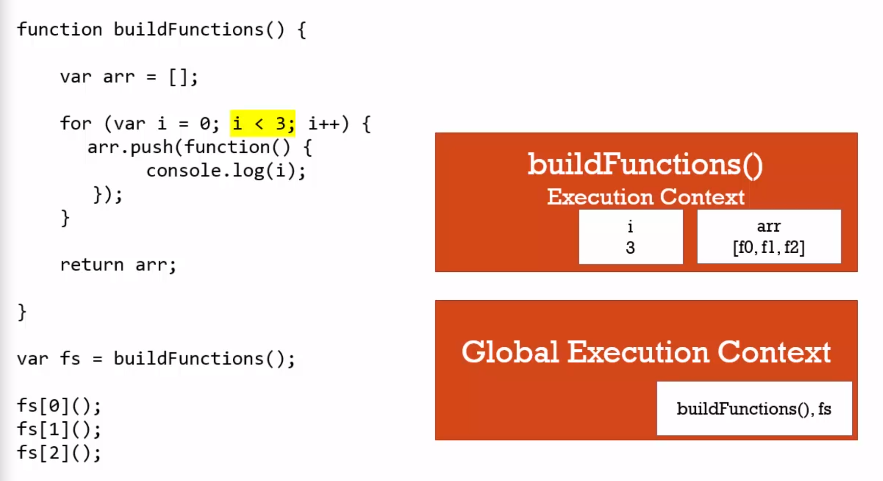
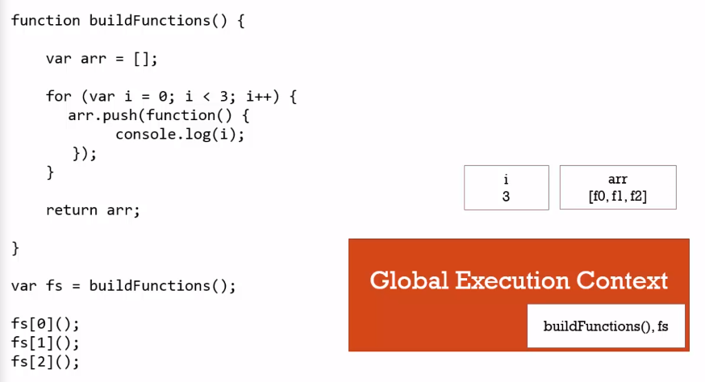
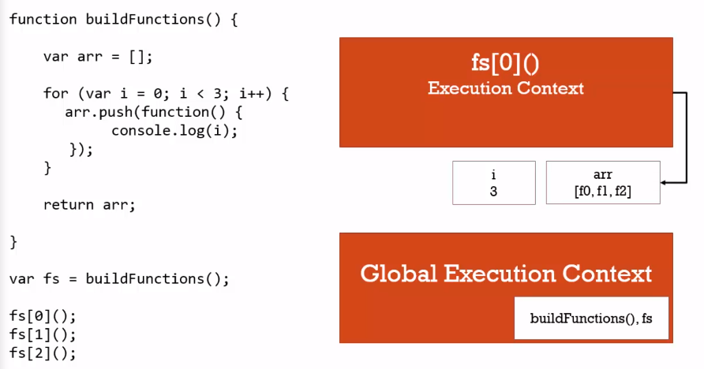

了解閉包 Closures (二)
有了上一堂課對於 Closures 的基礎概念後，這堂課將透過一個經典的例子進一步瞭解 Closures
讓我們看到程式碼範例:
範例一
首先建立一個函式 buildFunction ，並在其中透過 for 迴圈把 function 加到 array 中，再透過 return 回傳，最後依序呼叫 array 中的 function，在這裡，我們是不是預期三個 function 依序回傳 0~2 呢 ?
1 | function buildFunction() { |
當我們透過 console 看到結果會發現，三個 function 的印出來的都是 3，讓我依序解析程式碼來了解發生了什麼事
首先當 JavaScript Engine 啟動時，會建立一個 Global Execution Context，接著當我們一開始建立的 biildFunction 被呼叫 (invoked) 時，開始執行該函式，當執行到 for 迴圈時，依序從 i = 0~2 時將 function 加入 arr 中，直到 i = 3 ，因不符合當初設立的條件 (i < 3)，所以跳出迴圈，最後 return arr 這個陣列變數

接著函式執行在 return 後執行完畢，結束這個 Execution Context 跳出 Execution Stack，根據我們上一堂課所學到的，會留下最後所建立的 i = 3 和 arr 變數在其記憶體中的位置

在這裡我們可以先透過 console.log() 來看一下 fs 中三個 function 的值，會發現都是一樣的 function
1 | console.log(fs[0]); // function() {console.log(i);} |
當我們回到 Global Execution Context 逐行執行程式碼時，執行到陣列中第一個函式 fs[0]() 時，新的 Execution Context 產生，console.log(i); 中的變數 i 會因為沒有在這個 Execution Context 宣告，所以透過 Scoped Chain 往它的 Outer Environment 尋找，於是在詞彙環境 (Lexical Enviroment) 找到 i = 3，因此呼叫出 3 這個結果，同理後續兩個函式也會按照一樣的方式執行

範例二
那我們該如何避免範例一中，印出所有都是 3 的相同結果呢 ?
首先我們先建立一個相同內容的 biildFunctions2 來理解一下，在執行 buildFunctions 中的 for 迴圈時，我們只是將 function 加到 array 中，並沒有執行這個 function，所以才不會保留當下 i 的值，而是直到之後這個 function 被呼叫時，才會透過 Scoped Chain 找到被保存在記憶體中的 i
1 | function buildFunctions2() { |
為了保留當下的 i ，我們有兩個方法可以達到這個目的
方法一: let
透過 ES6 中的關鍵字 let，可以讓每次跑的迴圈都建立到一個新的記憶體位置中，當函式呼叫執行時，就會指向不同的位置，所以可以得到預期 0~2 的結果
1 | function buildFunctions2() { |
其實也可以直接將 for 迴圈一開始所建立的變數 i 透過 let 來建立，也會透過相同的方式建立在記憶體中不同的位置
1 | function buildFunctions2() { |
方法二: 加入陣列中即執行函式
如果在不支援 ES6 的環境下，我們可以在把 function 加入到 array 的時候，就透過 IIFE 的方式執行函式來創造一個 Execution Context，藉此保留當下 i 的值
1 | function buildFunctions2() { |